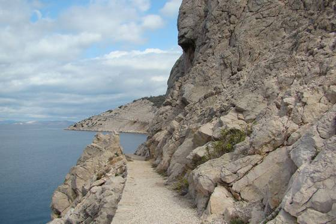

The mythical Croatian mountain chain rising high above the sea is 2,200 km2 in surface area, extending from saddle Vratnik to the northwest up to Zrmanja Canyon to the southeast extending for kilometres. It is the biggest protected region in Croatia for its natural values and biological variety. In 1978, the Velebit mountain range was included in the UNESCO International Biosphere Reserve Network. It consists of Paklenica National Park and North Velebit National Park. It is made of sedimentary rocks, limestone, dolomite, marked by the variety of underground and surface karst formations with numerous habitats of endemic flora and fauna (the most famous one – the Velebit degenia). Numerous are the remains of cultural monuments and testimonies of human existence on the mountain. It is covered by many instructive trails and some parts are well organized (Paklenica) in various types of active and adventurous tourism. The views that extend from there and the descent into many of the protected coves remain a permanent memory. It offers unique experiences ranging from cave bear traces to bear encounters, enjoying the mountain trails and encountering herds of wild horses. Registered in the UNESCO List of Protected Biosphere Reserves – it is situated in more than one county. Zadar County boasts of Tulove grede from which the coast of Italy can be seen on a clear day, the beauty of the karst River Zrmanja which is a rafting paradise, and the underground enchantment of Cerovačke Caves.
There are hundreds of "holes" on Velebit. It has the largest and deepest caves in Croatia. The three-part "Lukina jama" cave is 1392 m deep, making it one of the deepest caves in the world, and the deepest in southeast Europe, while the "Slovačka jama" is 1320 m. What makes it unique is that it is completely vertical, steepest in the world. At the bottom of the pothole is a water course or siphon with branches that are still unexplored. A kind of leech was discovered in the pothole, which has been ascertained to represent a new species, genus and family; it has been named Erpobdella mestrovi. List of potholes on Velebit deeper than 500 m: Lukina Jama, 1392 m, Hajdučki Kukovi – North Velebit Slovačka Jama, 1320 m, Rožanski Kukovi – North Velebit Velebita, 941 m, Rožanski Kukovi – North Velebit Meduza, 679 m, Rožanski Kukovi – North Velebit Patkov Gušt, 553 m, Hajdučki Kukovi – North Velebit